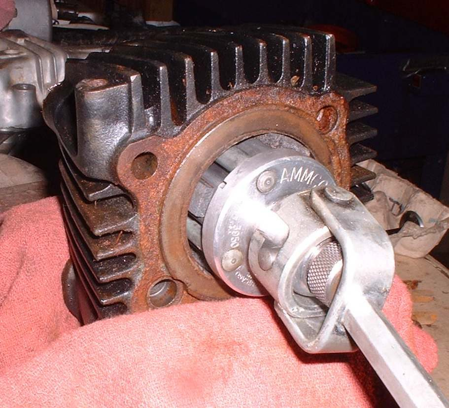
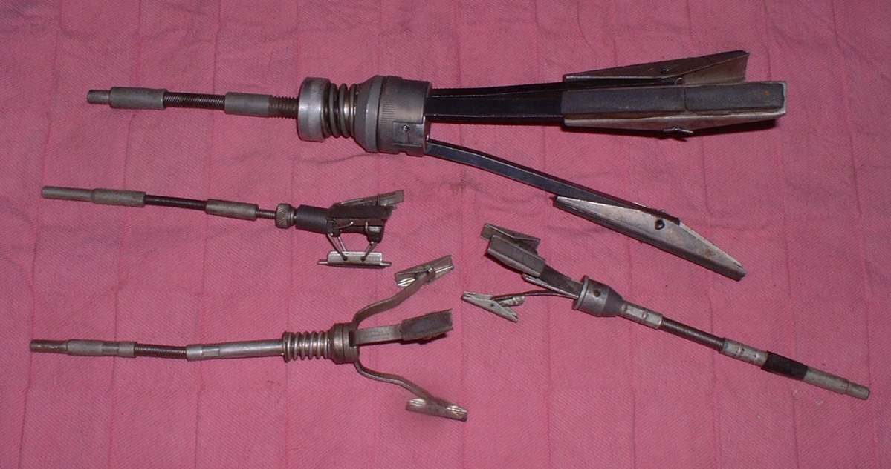
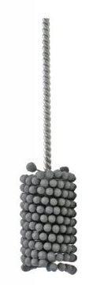
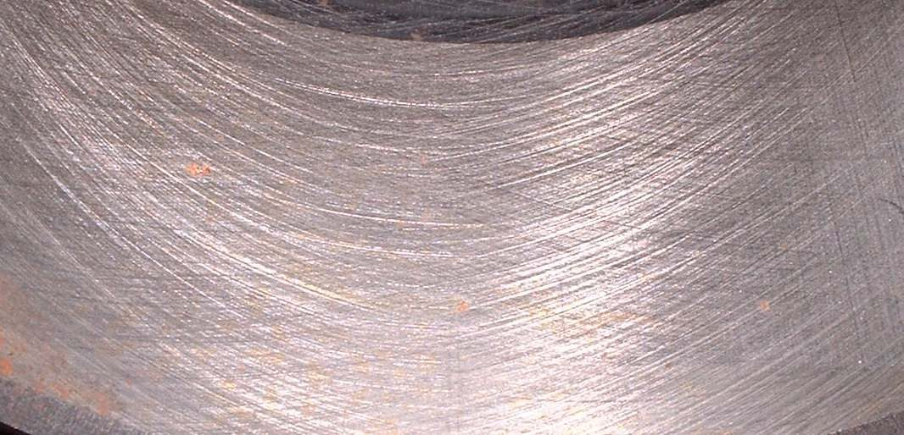
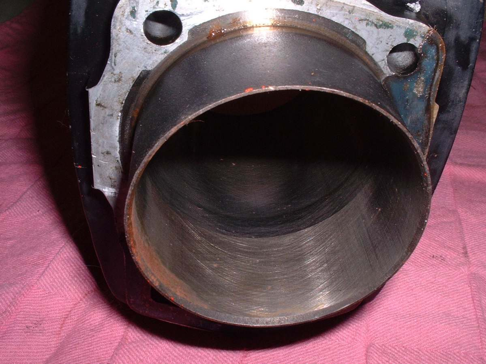

A used bore has a smooth glaze. New rings do not seat well on it, so the engine burns oil and loses compression. Honing roughens the wall with fine criss-cross scratches that hold oil and let the rings bed in. Light honing is a home job when the bore is within limits. Honing to a larger size needs a quality hone, many measurements and a lot of time, and a machine shop does it better.
Safety
- Wear eye protection. Wear gloves and avoid breathing oil mist.
- Never hone dry. Use plenty of honing oil, or the hone and bore overheat.
- Clean up thoroughly afterwards. Grit left in the bore wears new rings fast.
You need
- A cylinder hone that fits the bore. A cheap hone is enough to break the glaze. A better rigid hone is needed for anything more.
- Honing oil. Plain oil is a weak substitute.
- Solvent, warm soapy water and clean rags.
- Micrometers or a bore gauge, and the clearance limits from your manual.
Decide first: hone or bore
- Check the piston clearance and bore wear before any honing (Measure piston-to-cylinder clearance and bore wear).
- Wear is greatest at the top of the bore and across the front and back. The bottom wears least and may still show old hone marks.
- If the piston rocks front to back in the bore at top dead centre, the bore is badly worn. It needs boring to the next oversize and a new piston.
- A ridge felt with a fingernail near the top of the bore is another sign of wear.
- If clearance is within the manual limit, hone lightly and fit new rings.
- A rigid hone can correct a slightly oval or tapered bore, but only with careful measuring between passes. A cheap hone cannot hold the shape and may make it worse.
Steps
- Remove the piston and clean the bore with solvent.
- Cover the crankcase opening with a clean rag.
- Fit the hone. Coat the bore and hone stones with plenty of honing oil.
- Work the hone up and down the bore at a steady pace while it turns, so the scratches cross at about 45 degrees. About a minute is usually enough to break the glaze.
- Plated bores can be honed only a little. Use the stones the maker recommends.
- On a two-stroke, break the edges of the ports lightly with a ball hone or a fine file, so rings do not catch.
- Wash the bore with clean solvent, then with warm soapy water. Dry and oil it at once to stop rust.
- Wipe the bore with a clean rag with a little fresh oil. If the rag shows dirt, wash the bore again. Repeat until the rag stays clean.
Check your work
- An even cross-hatch pattern with no bright polished patches.
- A clean oil rag after the final wipe.
- Piston and ring clearances still within the manual limits.
When to go to a workshop
- Bore wear or taper is over the limit, or the bore has rust pits, scoring or a burnt, blue-tinted surface.
- You need to bore to an oversize. A boring machine gives a much more accurate result.
If it did not fix the problem
- Fit the rings correctly: Fit piston rings and deglaze the bore.
- If smoke continues after the rebuild, see Engine still smokes after a rebuild with new rings.